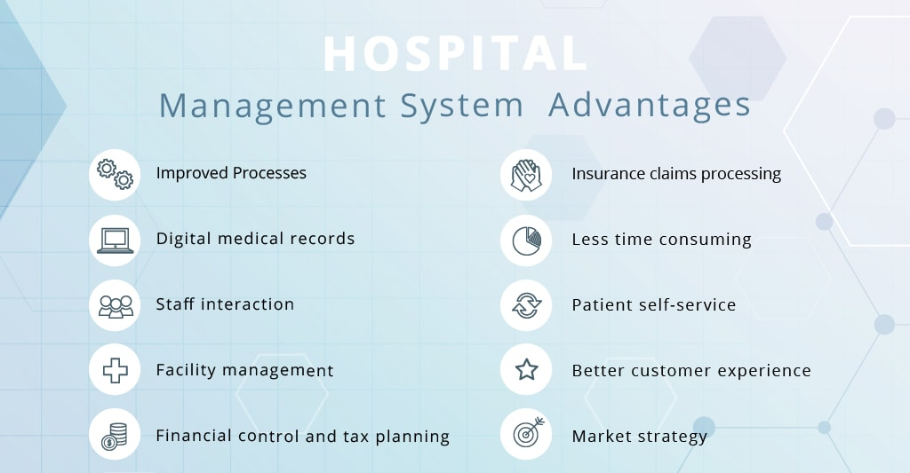

How Hospital Management System works?
Hospital Management System: Features, Modules, Functions, Advantages
Well-tuned hospital management workflow involves lots of important decisions that should
be made in the most efficient and quick way. Nowadays it is hard to implement it without
the distinct hospital management system. In this article, we’ll explore what is HMS software,
what functions it performs and how it helps the healthcare industry be more effective
and patient-centric.
List of the contents:
WHAT IS A HOSPITAL MANAGEMENT SOFTWARE
As long as each stage implementation needs to be accurate and explicit, the clinic management
system provides certain automation of many vital daily processes. The hospital system software
covers the services that unify and simplify the work of healthcare professionals as well
as their interactions with patients.
HOSPITAL MANAGEMENT SYSTEM ADVANTAGES
he implementation of hospital management system project provides the institution with different
advantages that improve the service quality and efficiency. As mentioned above it is created for
three groups of users: patients, hospital staff and management, and third-parties like drug
suppliers and insurance companies. The interaction between them conveys the general performance.
The benefits received by a certain group of users also positively influence the work of the others.
Cooperation and communication are the fundamental requirements here.

CLINIC MANAGEMENT AUTOMATION
The hospital management system automates the clinic’s work and optimizes the utilization of resources
instead of only the storage and presentation of the information. It balances the occupancy rates and calculates
the number of required employees. Automation helps to manage the general process, deals with the different
healthcare services and equipment providers on its own, analyzes and sends notifications to the user.
The purpose of the hospital information system is managing the employee and patient activities remotely
with immediate access for the authorized users. The patient-centric and well-managed company will also
ensure a better work environment for their employees.